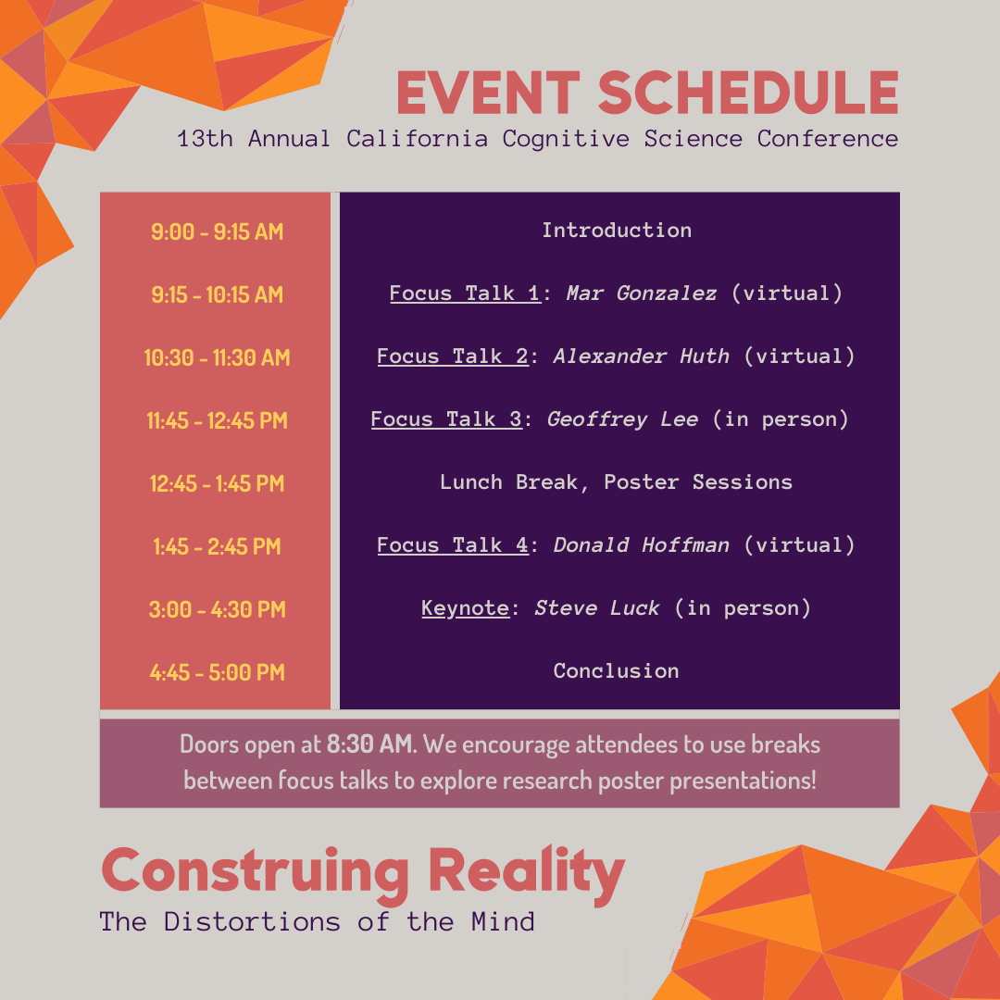

Get ready for the 13th Annual California Cognitive Science Conference! This year's theme is “Construing Reality: The Distortions of the Mind." Our speakers will explore the realm of perception, navigating between actuality and deception. Members of CSSA’s internal team have been planning this conference throughout the past year, and we're so excited to officially announce registration is open! The Conference will be on April 16th, 2022: register at https://ccsc2022.eventbrite.com/. We are offering FREE tickets for students and faculties, and an early bird special of $5.00 for general admission until March 31st.
BONUS: We will be selling $5 chipotle bowls during the lunch break (vegan options included)!
Poster Presenters
ABSTRACT SUBMISSIONS NOW CLOSED
UPDATE: CCSC 22 will be primarily accomodating in person presentations, as we are short-staffed and unable to host a full online platform. For those who submitted abstracts with the intention of presenting online, we will display your posters on our website as well as the eventbrite and you will still have the opportunity to receive feedback!
Schedule
Keynote Speaker
Steve Luck
Steven J. Luck is a Distinguished Professor of Psychology at the University of California, Davis. He received a Ph.D. in Neurosciences from the University of California, San Diego in 1993, joined the Psychology Department at the University of Iowa in 1994, and then moved to UC Davis in 2006. He served as Director of the Center for Mind & Brain from 2009-2019. Dr. Luck’s research focuses on the cognitive and neural mechanisms of attention and memory in typical adults and on neurocognitive dysfunction in people with psychiatric and neurological disorders. He has identified fundamental limits on attention and short-term memory that determine the limits of human cognitive ability, and he has developed a leading theory of cognitive dysfunction in schizophrenia. Dr. Luck is also a leading expert on the use of event related brain potentials (ERPs) to measure the neural activity underlying cognition, and he conducts workshops on this technique that have provided training to over 4000 scientists around the world. He is a fellow of the American Psychological Association, the Society of Experimental Psychologists, and the American Association for the Advancement of Science, and he is the winner of many awards, including the Troland Award from the National Academy of Sciences. He has published over 200 books, book chapters, and journal articles. He is also deeply committed to undergraduate education and has developed innovative courses that maximize student engagement and learning.
Focus Speakers

Donald Hoffman
Donald Hoffman received his PhD from MIT, and joined the faculty of the University of California, Irvine in 1983, where he is a Professor Emeritus of Cognitive Sciences. He is an author of over 100 scientific papers and three books, including Visual Intelligence, and his new book, The Case Against Reality. He received a Distinguished Scientific Award of the American Psychological Association for early career research, the Rustum Roy Award of the Chopra Foundation, and the Troland Research Award of the US National Academy of Sciences. His writing has appeared in Edge, New Scientist, LA Review of Books, and Scientific American and his work has been featured in Wired, Quanta, The Atlantic, and Through the Wormhole with Morgan Freeman. He has a TED Talk titled “Do we see reality as it is?”
Geofrrey Lee
Geoffrey Lee is an associate professor in the Department of Philosophy. His main areas of research interest are philosophy of mind, metaphysics, and the foundations of cognitive science and neuroscience. Much of his work centers around problems to do with consciousness and the mind-body problem. How does consciousness emerge from the brain? What would count as an answer to this problem? Is the problem as deep as is sounds? Lee is also interested more specifically in spatio-temporal experiences. Do experiences of time or space have a subjective element, like the experience of color or taste? Is time's passage an illusion?
Mar Gonzalez
Mar Gonzalez-Franco of Microsoft received the 2022 IEEE VGTC Significant New Researcher Award in recognition of her research and incipient leadership in the field of Virtual Reeality and spatial computing. Her work has provided new insights on how people behave and perceive avatars, haptics, sound and multi-sensory signals inside Virtual Reality. She has produced numerous new prototypes advancing the state of the art on haptic controllers and haptic displays. She has been prolific in proposing new theories and standardized methods of evaluation for different phenomena such as embodiment, locomotion, the uncanny valley of haptics, avatar self-recognition and the self-avatar follower effect. Meanwhile, Dr. Gonzalez-Franco has helped democratize access to VR technology by open sourcing of avatars and avatar animation libraries (Microsoft Rocketbox).
Alex Huth
Alexander Huth is assistant professor of Neuroscience and Computer Science at the University of Texas at Austin. His research uses computational methods to model how the brain processes language and represents meaning. Alexander is also interested in fMRI technology and data visualization. His lab, HuthLab, uses quantitative computational methods to try to understand how the human brain processes the natural world. In particular, they are focused on understanding how the meaning of language is represented in the brain.
© 2021 Berkeley CSSA

We are a student group acting independently of the University of California. We take full responsibility for our organization and this web site.